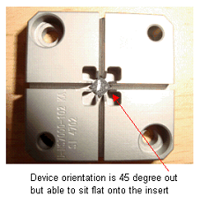
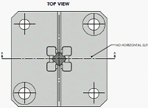

Service History
Subject: UTAC NS-7000 way to detect 3x3mm device 45 degree out
Handler Model: NS-7000
Controller: RC520
Date: 3 Apr 2009
Symptom
Currently NS7K handler floating sensor's is not able to detect device that is mis-orientation by 45 degree and sitting flat onto the shuttle insert.
Our customer would like to know if there is other ways the handler can detect this phenomenon shown in the photo below effectively, eg. x-y sensor, etc ...
This device is QFN 3x3 only and will damage when the index arm plunge down to pick it up.
Most of the bigger size package and C/K do not experience this kind of problem. So I assume it got to be related to the design of the shuttle insert, more or less.. And maybe KA can help on this.
However, customer still like to know if there are any ways to counter mis-oriented device. ie. by camera, cross sensor etc.

Action
According to email 6 Apr 2009 by Hidaka-san, This is 3x4 devices Changekit(CK.)
Shuttle slit's width should be reduced.
Designer should check device is floating if the device is 45 degree out on the shuttle.
Proposal by KA:
Remove the horizontal slit of the pocket to prevent the device from going in the pocket and in this way the handler will be able to detect the mis-oriented device

Cause